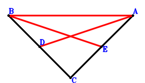

Exercise 1： Let E, D be the midpoints of CA, BC, respectively. BC⊥CA. Prove that \(\dfrac{5 BA^{2}}{4}=BE^{2} + DA^{2}\).

\(\because \) D is the midpoint of BC \(\therefore \small\overrightarrow{AD}=\dfrac{\small\overrightarrow{AB}}{2} + \dfrac{\small\overrightarrow{AC}}{2}\).\(\because \) E is the midpoint of CA \(\therefore \small\overrightarrow{AE}=\dfrac{\small\overrightarrow{AC}}{2}\).\(\because \) BC⊥CA \( \therefore\small\overrightarrow{AC} \cdot \small\overrightarrow{BC}=\small\overrightarrow{AC} \cdot \left(- \small\overrightarrow{AB} + \small\overrightarrow{AC}\right)=- \small\overrightarrow{AB} \cdot \small\overrightarrow{AC} + \small\overrightarrow{AC}^{2}=0.\)In conclusion, \(- \dfrac{5 \small\overrightarrow{BA}^{2}}{4} + \small\overrightarrow{DA}^{2} + \small\overrightarrow{EB}^{2}=- \dfrac{5 \small\overrightarrow{AB}^{2}}{4} + \small\overrightarrow{AD}^{2} + \left(\small\overrightarrow{AB} - \small\overrightarrow{AE}\right)^{2}=- \dfrac{5 \small\overrightarrow{AB}^{2}}{4} + \left(\dfrac{\small\overrightarrow{AB}}{2} + \dfrac{\small\overrightarrow{AC}}{2}\right)^{2} + \left(\small\overrightarrow{AB} - \dfrac{\small\overrightarrow{AC}}{2}\right)^{2}=- \dfrac{\small\overrightarrow{AB} \cdot \small\overrightarrow{AC}}{2} + \dfrac{\small\overrightarrow{AC}^{2}}{2}=0\), that is, \(\dfrac{5 BA^{2}}{4}=BE^{2} + DA^{2}\).